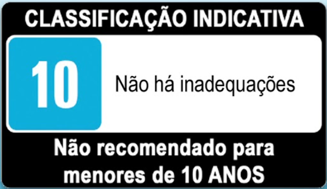

HOME
CONTATO
QUEM SOMOS?
LOGIN
Se obter um game over,
não desista de tentar mude de fliperama e volte a jogar!
LINHA DO TEMPO
1958
1961
1971
1972
1976
1977
1981
1983
1985
1986
1988
1990
1991
1992
1993
1994
1996
1998
2000
2001
2005
2006
Clique no ano para entender a evolução dos jogos!
caça palavras
Instagram
Cadstre-se para jogar
GitHub
TELEFONE:
+55 011 90807 - 4545
E-MAIL: gabriel.contardi@bandtec.com.br

 +55 011 90807 - 4545
+55 011 90807 - 4545